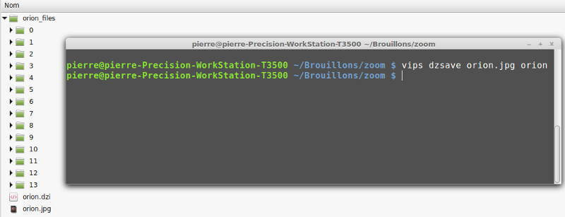
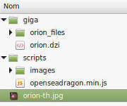

Images zoomables
Je vous propose aujourd'hui, toujours avec des outils libres et gratuits, d'afficher des images en haute définition sur votre site web. Vous pourrez en exploiter tous les détails en vous y déplaçant et en zoomant à volonté. Voyez ici un exemple de réalisation en ligne sur ce site.
Les outils
VIPS - Libvips
Libvips est un logiciel de traitement graphique en ligne de commande, extrêmement puissant. Nous ne ferons ici qu'en effleurer les possibilités. VIPS nous servira à découper l'image d'origine en un grand nombre de carreaux permettant des opérations de zooming et un affichage fluide.
Si votre machine tourne sous Linux, VIPS fait à priori partie de votre distribution. Tapez $ vips -v dans un terminal pour le vérifier. Sinon, installez le package VIPS par la méthode habituelle.
Sous Windows ou Mac : le site Libvips vous propose des téléchargements adaptés à votre système. Installez VIPS par ce moyen.
Il existe une interface graphique à VIPS, baptisée NIPS2. Je la trouve inutilement lourde et compliquée pour l'utilisation très simple que nous allons faire.
OpenSeadragon
OpenSeadragon (l'hippocampe libre) est un visualisateur d'images zoomables en haute définition. Il est open source et réalisé entièrement en Javascript. OpenSeadragon fonctionne aussi bien en local, sur votre clé USB par exemple, qu'en ligne sur un serveur distant. Comme il va être contenu dans une simple page web, vous pourrez l'utiliser à volonté sous Linux, Windows ou Mac.
- Téléchargez l'archive disponible en première page du site.
- Créez un dossier de travail sur votre ordinateur. Appelez-le
zoompour simplifier. - Décompactez-y votre archive.
Découpons l'image
Je suppose pour ce billet que vous disposez déjà d'une image en grand format. Que ce soit le scan d'une page de registres paroissiaux, un grand panorama1 que vous avez réalisé vous même, un tableau mis en ligne par un musée2 ou une photo issue d'une agence spatiale3.
Dans de nombreux cas, l'image telle quelle produite par un appareil photo d'une bonne définition sera suffisante. Pour notre démonstration, j'ai choisi une photo de la Nébuleuse d'Orion (3,29 Mo) disponible sur le site du télescope spatial. Je la renomme orion.jpg.
Attention au grand méchant 404
L'architecture du site Hubble a été considérablement modifiée et la plupart des liens directs vers des pages ou des images ne sont plus disponibles. Je corrigerai ultérieurement mes exemples avec des liens fonctionnels.
Procédons au découpage proprement dit :
- ouvrez un terminal de commande
- entrez-y la ligne suivante :
vips dzsave orion.jpg orion

La capture ci-dessus vous montre à la fois le terminal et le résultat produit dans l'explorateur de fichiers :
orion.dziest un fichier de métadonnées permettant l'affichage de votre imageorion_filesest un dossier renfermant tous les carrés de l'image découpée- les 13 sous-dossiers, contiennent des carrés d'image, regroupés par niveau de zoom
Pour compléter, je crée dans The Gimp une vignette en 256x256 pixels, que je nomme orion_th.jpg4.
Un espace de travail
 Pour tout processus de création informatique, il est primordial de ranger ses fichiers selon une arborescence réfléchie.
Pour en obtenir une semblable à la mienne :
- Allez dans votre dossier
zoom - Créez un sous-dossier
scriptset un sous-dossiergiga - Dans giga, copiez le fichier
openseadragon.min.jset le dossierimagestirés de l'archive d'OpenSeadragon. - Déplacez dans giga le fichier
orion.dziet le dossierorion_files
La page Web
Pour afficher notre nébuleuse, il ne nous manque plus une page HTML à visiter avec notre navigateur.
- Créez dans votre dossier zoom un nouveau fichier
index.html - Ouvrez-le dans votre éditeur de code favori5.
- Copiez-y le code ci-dessous (après avoir cliqué sur View Raw)
- Enregistrez
- Vous pouvez également télécharger ce fichier sous forme d'archive en cliquant sur zoom_orion.html en bas du cadre de code.
Une pincée de css
Pour rendre les choses un peu plus élégantes, rajoutons une feuille de style.
- Créez dans votre dossier zoom un nouveau fichier
zoom.css - Ouvrez-le dans votre éditeur de code favori
- Copiez-y le code ci-dessous
- Enregistrez
Et voilà !
Il vous reste maintenant à ouvrir index.html dans votre navigateur et vérifier que tout fonctionne. Voyez mon exemple sur Github.
Évidemment il vous faudrait encore enrichir la feuille de style pour adapter le look d'OpenSeadragon à celui de votre site.
Je vous montre dans un tout prochain billet ce que cela donne intégré dans mon site Jeckyll.
-
Nous verrons dans un prochain billet la fabrication de telles images. ↩
-
Parcourez par exemple les collections du Metropolitan Museum of Art de New-York. ↩
-
Allez faire votre marché sur le site du téléscope spatial Hubble. ↩
-
_thcomme thumbnail, miniature en anglais. ↩ -
En ce qui me concerne, et depuis un bout de temps, c'est Visual Studio Code. ↩